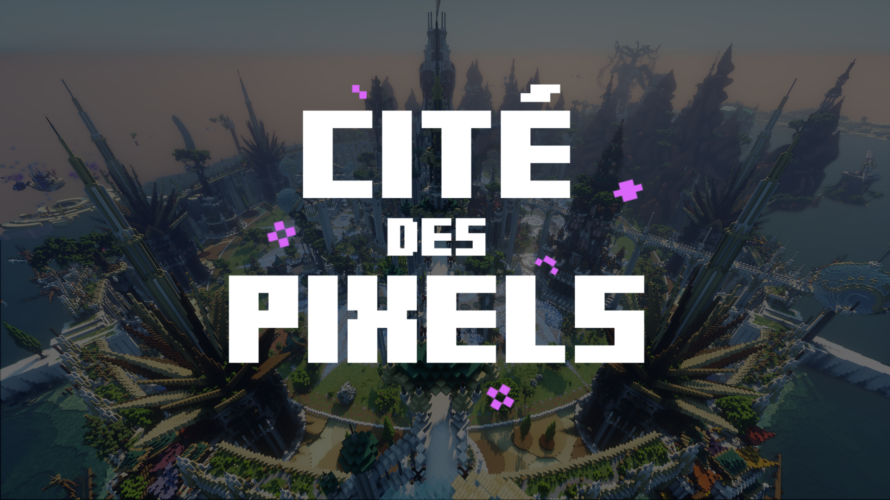

-
La Cité Des Pixels
La Cité des Pixels est un tournoi caritatif sur Minecraft au profit de l'UNICEF. Organisé par un camarade du Gaming Campus, j'ai eu la chance de participer à l'organisation de l'évènement, en développant un datapack et un plugin. Pendant l'événement, j'ai été modérateur ingame. Nous avons récolté 71 000€ pour l'UNICEF.
71 000 € !
— Cité Des Pixels (@CiteDesPixels) June 29, 2024
Les portes de la Cité se sont fermées sur une cagnotte folle que l'on n'imaginait même pas, et tout cela grâce à vous 🫶
De la part de toute l'équipe de bénévoles, merci du fond du coeur d'avoir cru en nous et de nous avoir suivi pendant cette incroyable semaine 🩵… pic.twitter.com/2CZA62Hyao
>Site officiel<
-
Galactic Emu
Galactic Emu est un jeu de type Bullet Hell codé avec Pygame. Pour ma part, j'ai codé le système de tir du joueur et des énemis, permettant de crééer des patterns complexes pour les différentes phases du boss.
Notre ressenti
C'était un projet très intéressant, et nous sommes très satisfait du design de notre site, mais comme nous l'a fait remarquer notre intervenant, nous n'avons pas assez exploité ce qu'il nous a appris en cours, ce qui est dommage.